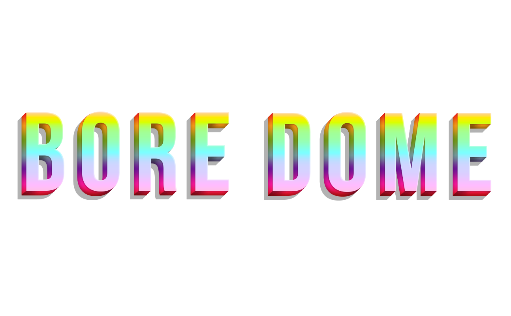

Games:
Experimental game developed with Aggelos Efstathopoulos (birgif), and produced by William Wagner, Digital Moment Award at A-MAZE 2022, and Best Student Game at IGF 2020
The roles in the project were pretty much shared between Aggelos and me, and we took part in almost all the work that each other produced. In a more practical / technical sense, my work included:
- Most 3D assets (characters and environments) and materials/shaders
- Most 3D animations
- Most in game FX
- Some tools
- Game Design
- Concept Art / Marketing Art
- Music and audio effects
Screenshots
In the near future, everyone is perfect. BORE DOME is a simulator of mediocre experiences featuring miseries you won't find in other games, like simulated tears, bad smells, and general awkwardness.
3D Assets
3D in BORE DOME functioned through modules and attachments: Whenever one character felt good, we would take whatever we liked from it and use it for next characters. Rigging and animations would also sometimes be shared among characters, and the focus was on simplicity.